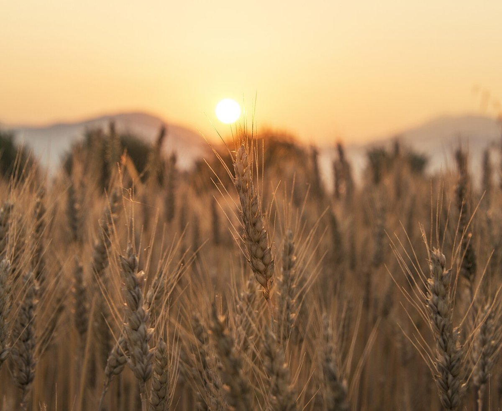
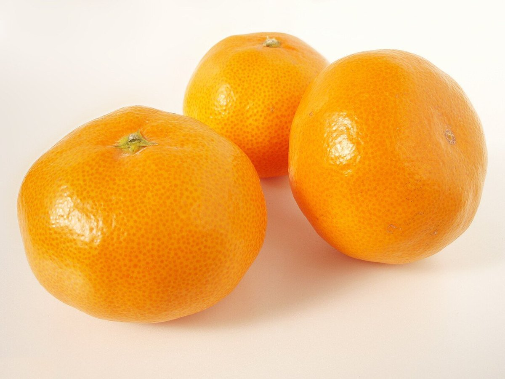
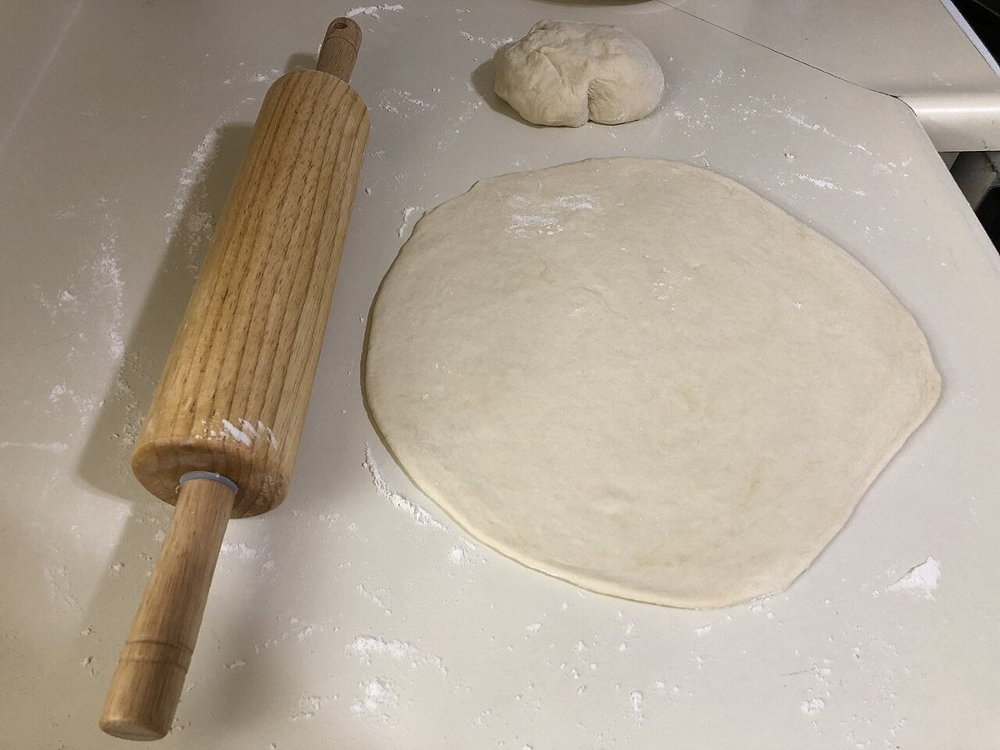
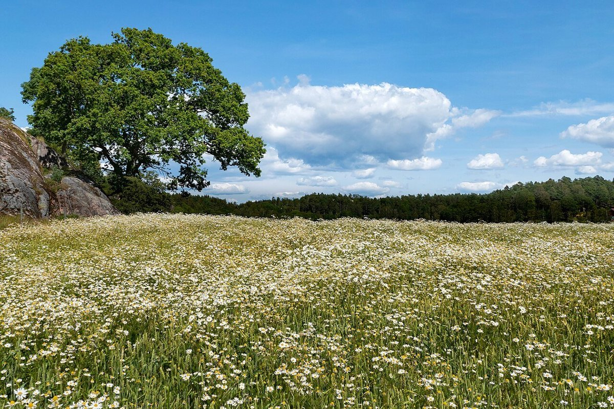

掲載写真はフリー素材のイメージ写真で、店舗の実際の商品・店内ではありません。他の地域で撮影されたものや、撮影地が不明なものを含みます。
お店について
この配色と構成は制作側の案です。お店の考えを表すものではありません。
基本情報
- 店名
- ちいさいパン屋 クボサンチ
- 所在地
- 三重県南牟婁郡御浜町下市木3392-4
- 電話
- 080-1593-3120
電話で問い合わせる - @kubo.sanchi
Instagramを見る - 営業時間
- 準備中(お問い合わせください)
- 定休日
- 準備中(お問い合わせください)
- 席数
- 準備中(お問い合わせください)
- 駐車場
- 準備中(お問い合わせください)
店主・スタッフ
準備中(お問い合わせください)

制作側のコンセプト案
「ちいさな窓から、パンのある暮らしをのぞく」。店名の「ちいさい」から思いついた、制作側の案です。ページのあちこちに、小さな窓や荷札の形を使っています。
店名の由来や、お店の想いは、お店にうかがってからこのページに反映できます。
配色の案
薄い橙のクリームを背景に、みかんの橙、珈琲の茶、葉の深緑を組み合わせました。町の景色を思い浮かべた、制作側の案です。
- 薄橙クリーム #FFF4E0
- みかん橙 #E8710A
- 珈琲茶 #34261B
- 葉の深緑 #3F5E26

つくる場面のイメージ
生地をのばす場面を想像したイメージ写真です。
実際の工房ではありません。


お店の想いや実際の写真は、取材後に差し替えられます。